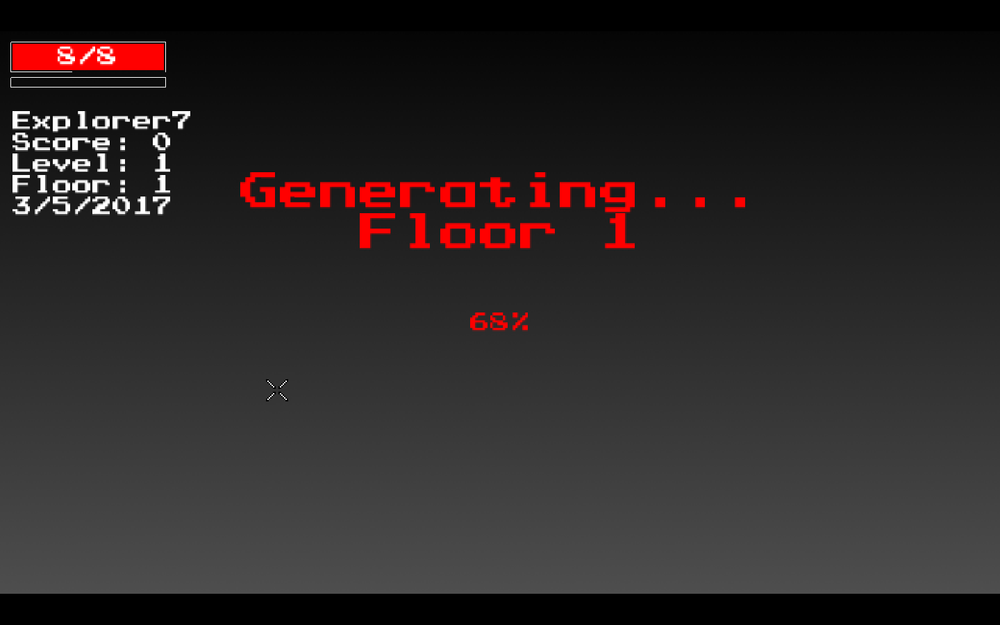
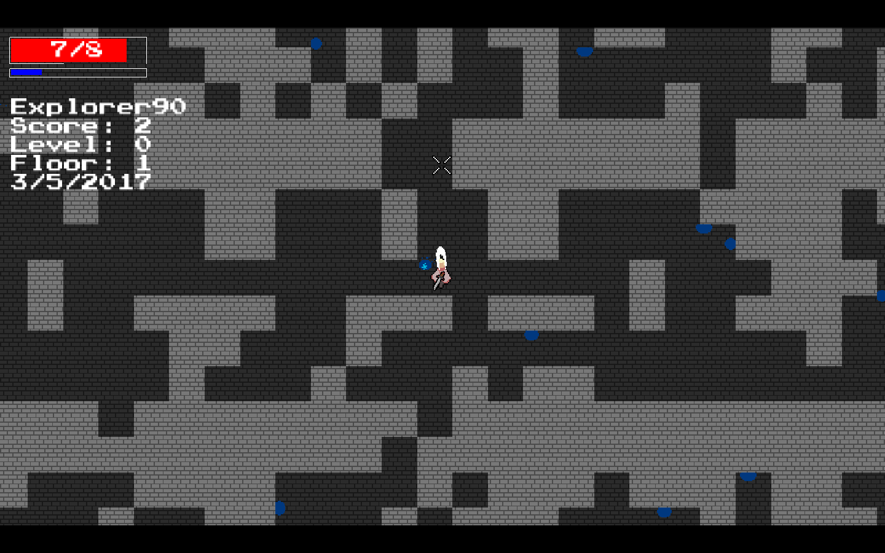
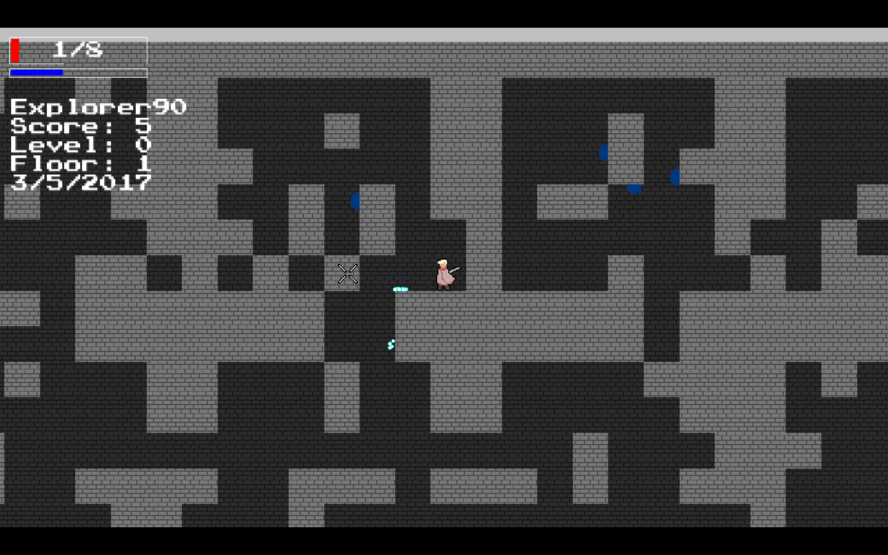
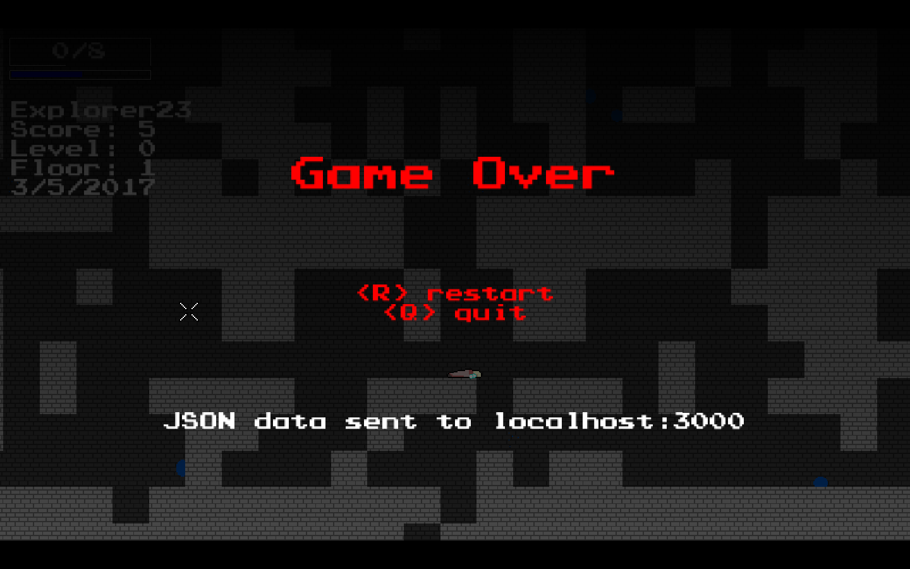

Welcome

to Abyss, a desktop-based rogue-lite pixel rpg. Designed in Gamemaker, Abyss is intended to be difficult--you will be hurt, you will be lost, and you will be dead. Those without fast reflexes should be wary.
You find yourself in an otherworldly dungeon, pursued by dark spirits in labyrinthine hallways. As you look about, you see nothing but stone, and hear nothing but sinister whispers.
Your goal is simple--avoid death, navigate the treacherous hallways, and find the exit to this nefarious place. However, it seems that each doorway you pass through only takes you deeper...
As you travel farther and farther, you begin to wonder: is escape even possible? Is the outside world even real, or a distant imagined memory? Will you live to find out, or die in these corridors?